Citér guiden: https://doi.org/10.5281/zenodo.23417099
Hent guiden som PDF: Quickguide til DOTE 2.0.pdf
Denne version (permalink) er automatisk genereret fra codeslayer84/DOTEQUICK@a9290b9 den 2026-10-18.
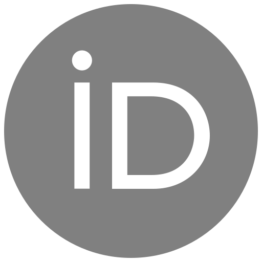
0000-0002-5240-9452 ·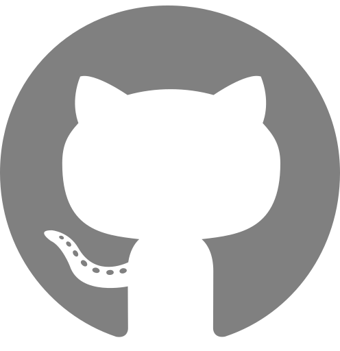
codeslayer84✉ — Kontakt via GitHub Issues eller mail til Jacob Gorm Davidsen <jdavidsen@ikk.aau.dk>.
Featuring @ © Bigsoftvideo
Velkommen til DOTE2.0!
Du kan altid finde den nyeste udgave af DOTE på www.dote.aau.dk og som studerende på Aalborg Universitet har du gratis adgang til Pro versionen. DOTE er gratis for dig – så citer DOTE eller give vores tutorials på Youtube et like/subscribe.
Du kan også bruge DOTE (free version), men så får du altså ikke den fulde pakke. Tag fat på din it-afdeling og få dem til at købe licenser til jer eller sving dit eget dankort.
Dette er en quickguide som skal hjælpe dig i gang med DOTE – vi kommer ikke omkring alt i denne guide. Men du kan finde de fleste svar i vores help-guide eller se vores tutorials på Youtube.
Hvis du har en meget gammel computer fx en Mac fra din konfirmation, så kan DOTE være lidt langsom. Og ja, denne tekst er ikke skrevet som en akademisk videnskabelig artikel, men som en formidlende informativ tekst med det formål at give dig lidt støtte i dit møde med DOTE.
Det er dit eget ansvar at opbevare indsamlet data (lyd- og video-filer) et sikkert sted, men DOTE behandler ikke dit data.
Har du forslag til forbedringer af denne quickguide – så kan du blive medredaktør ved at sende en mail til jdavidsen@ikk.aau.dk – du skal ikke betragte guiden som færdig, da vi hele tiden udvikler på DOTE – guiden er permanent beta!
God arbejdslyst.
Jacob Davidsen
Citer DOTE [1]:
McIlvenny, Paul (Producer), Davidsen, Jacob Gorm (Producer), Kovács, Artúr Barnabás (Developer), & Stein, Alexander (Developer). (2022/6). DOTE: Distributed Open Transcription Environment. Computer programme, Github. https://github.com/BigSoftVideo/DOTE/
Du finder en opdateret version af DOTE på www.dote.aau.dk – download den version som passer til dit operativsystem (Mac/Windows). Du skal trykke på den grønne knap i toppen til højre ”Downloads”.
Studerende på Aalborg Universitet får en gratis licens til DOTE – du skal bruge dette link og registre dig: https://www.dote.aau.dk/license-details/3 - det er vigtigt, at du bruger din AAU-student mail.
Ansatte på SSH får samme behandling, så de kan også hente en gratis PRO licens.
Er du ikke studerende på AAU, så må du i sparegrisen eller få din skole overbevist om at købe en licens til dig og dine studiekammerater.
Når du har hentet installationsfilen – så skal DOTE installeres. Det foregår som du plejer, når du har hentet software på nettet.
Windows: klik to gange på dote.exe – så starter installationsprocessen. Du støder nok en advarsel ala nedenstående
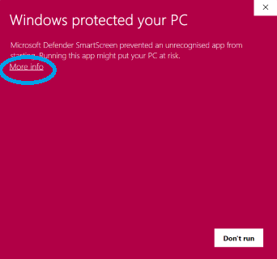
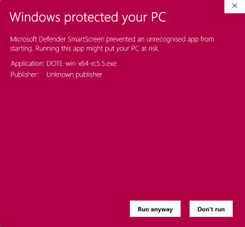
Men du klikker hurtigt på More info. Så får du mulighed for at vælge ”Run Anyways”. Så bliver DOTE installeret.
Mac: træk DOTE over i din Applications mappe. Din Mac kan også brokke sig lidt. For at installere DOTE på din Mac skal du nok op ”System præferencer”, vælge ”Sikkerhed og privatliv”, vælg ”General”, så skulle du gerne se en mulighed for at installere DOTE alligevel. Det kan se lidt forskelligt ud fra OS version til OS version. Men det er altså cirka her du finder det.
Når du er færdig, så er du klar til at gå i gang med dit første projekt. Men bliv lige her og læs den næste sektion, så du kan få aktiveret din licens med det samme.
Nu har du hentet og installeret DOTE. Som studerende på Aalborg Universitet, så har du også skrevet dig op til en gratis version af DOTE. Så nu åbner du lige din AAU mail. Du har modtaget en mail fra DOTE. Her finder du en vedhæftet fil license.DOTElicense – du downloader denne fil (højreklik på filen eller dobbelt tap (mac). Og stop – du kan ikke åbne denne fil ved at klikke på den.
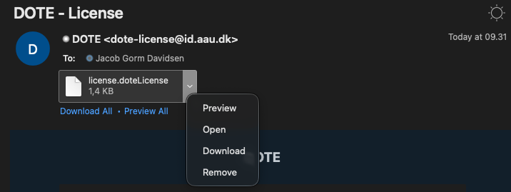
Det er en licensnøgle, som skal aktiveres i DOTE. Så åbner du DOTE, hvis du ikke allerede har gjort det. Så følger du disse skridt:
Sådan nu er du klar til at transskribere med DOTE Pro.
Lad os se lidt nærmere på interfacet. DOTE er opbygget af fleksible paneler, som du kan placere, minimere og maksimere som du har lyst til. Denne del af quickguide fokuserer kun på den øverste del af interfacet.
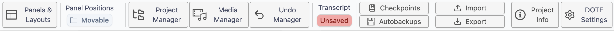
Under låge nummer 1 gemmer sig ”Panels and Layouts”. Her kan du tilpasse og justere dit layout og åbne flere paneler, hvis du ønsker flere ”Timeline waveform” eller ”Media Player. Du kan være mellem forskellige layout modes og ”Panel actions” (se nedenfor). Når du har tilpasset og justeret DOTE layout til lige præcis dit behov – så kan du gemme det til senere. Det kan være særlig relevant, hvis du har forskellige arbejdssteder. Deruover har vi gemt nogle standard layouts som du nemt og hurtigt kan skifte i mellem.
Når du åbner DOTE første gang, så du i ”Full mode” – se under ”Panel actions”. Det er smart nok indtil du har lært DOTE godt at kende – så kan du gå i ”Zen mode”. Du kan skifte lidt i mellem de forskllige modes and actions for at finde det rette layout for dig.
Så DOTE kan sættes op på den måde du bedst kan lide. Det enkelte panel kan flyttes rundt, gøres større eller mindre. Nogle paneler kan du også have flere af fx flere kameravinkler. Til højre for ”Panels and Layout” kan du låse panel positionerne, så du ikke ved et tilfælde kommer til at flytte rundt på dem.
Her finder du dine projekter – jo mere du bruger DOTE jo flere projekter vil du have. Du kan se forskellige status for dit projekt og din transskription. Du kan også tilføje transskriptioner som bogmærker (bookmarks), så de er lettere at finde en anden gang. DOTE er smart, så hvis du har nogle DOTE projekter i en mappe, så finder vi det til dig. Det er også muligt at oprette en ny transskription direkte fra dette vindue.
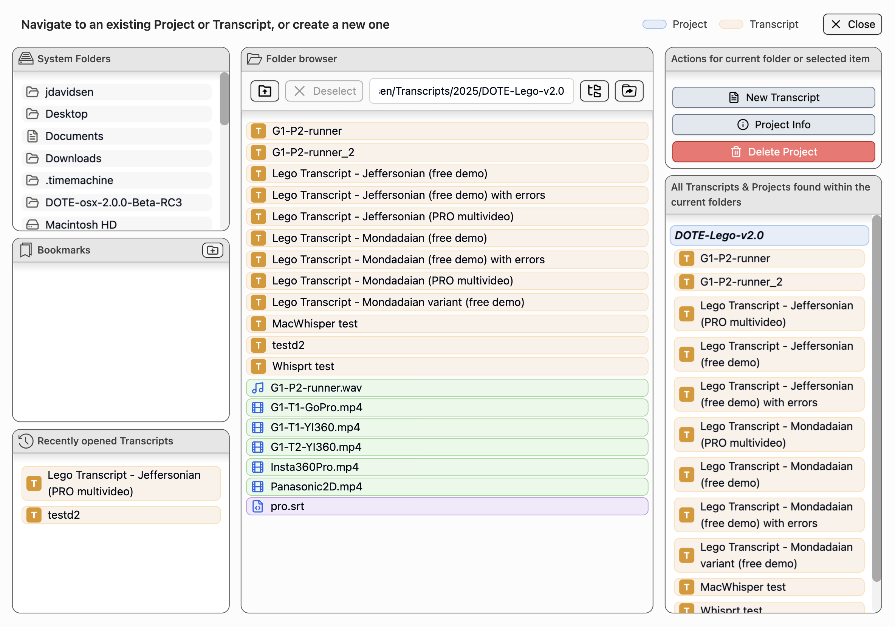
Når du har oprettet et projekt er Media Manager et af de første steder du skal hen. I Media Manager tilføjer du lyd eller videofiler til dit projekt. DOTE kan også afspille 360-graders videoer. Husk at klikke af i Active for at du kan se og afspille videoerne i dit projekt. Du kan også regenerer waveformen ved at klikke på tandhjulet.
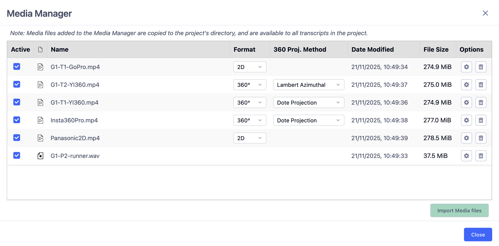
Ja, det giver lidt sig selv. Du kan fortryde og du kan fortryde igen. Men DOTE2.0 udvider lige de gængse forståelser af redo/undo ved at tilføje en decideres manager, som kan spole frem og tilbage i dine handlinger.
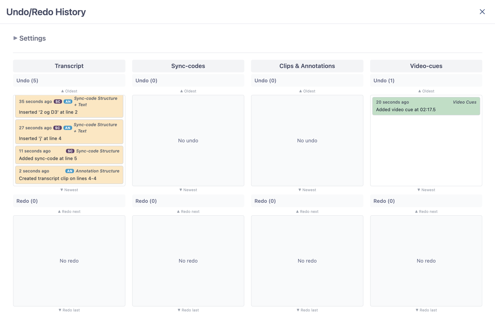
Kender du det? Du har lige mistet en dags arbejde. Det er træls. DOTE har to funktioner til at gemme dit arbejde – og det bedste er at du altid kan vende tilbage til en tidligere version af dit arbejde. Autobackups tager selvfølgelig en kopi af dit arbejde med et vist interval. Checkpoints er derimod din mulighed for at gemme og kommenterer på dit arbejde. Du kan bruge det til at huske dig selv på, hvad du arbejdede med i dag eller bruge det som kommentarer til dine samarbejdspartnere, når de skal overtage arbejdet. Smart.
Alle funktioner som relatere sig til import af andre filer eller projekter foregår ved Import. Skal eksportere dit projekt eller din transskription så klikker du på Export.
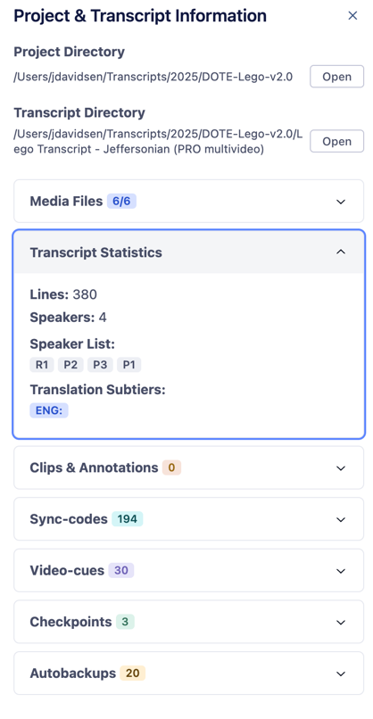
Her finder de mest basale informationer om dit projekt. Til en start står der ikke meget. Men i takt med at du arbejder på dit projekt, så fylder DOTE automatisk informationerne ud. Du kan se mange spændende ting her. Du kan se hvilke medier fuler som er tilknyttet projektet, statistik om din transskription, antallet af clips og annotationer, antal af sync-codes og video-cues og dine checkpoints og autobackups. Med project info kan du hurtigt få et overblik over dit projekt. Det er også her du finder ”Merge Transcripts”, hvis du skal samle flere transskriptioner til én (se afsnittet om at samarbejde og merge transskriptioner).
Her kan du foretage alle mulige former for tilpasninger af DOTE. Du skal ikke blive skræmt, der er virkelig mange indstillinger. Nogle er relevant for dig, hvor andre indstillinger er mere relevante for andre. Du kan blandt andet indstille hvor ofte DOTE skal lave en autoback, ændre shortcuts og ændre grundlæggende indstillinger for DOTE.
Lad os se lidt nærmere på de forskellige paneler. Vi gennemgår dem en for en i og med at du kan tilpasse de forskellige paneler til dine behov har vi ikke inkluderet et screenshot.
Du kan sidde og klikke med din mus på de forskellige knapper – spild af tid. Du vil opleve at du kan få lavet meget mere arbejde ved at bruge nogle få shortcuts.
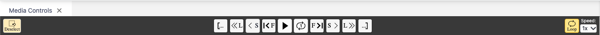
Derfor har jeg kun fokus på genveje på dit keyboard:
Du er nødt til at bruge touchpad til at styre hastigheden – det er i højre side – vælg din ønskede hastighed under ”speed”.
Skal du bruge et billede fra din video – fx til at vise en bestemt kropsholdning, et blik eller en genstand i din projektrapport? Så skal du ikke rode med dit operativsystems screenshot-værktøj. I toppen af videopanelet finder du knappen ”Capture”. Spol hen til det sted i videoen du vil have et billede af, sæt videoen på pause og klik på ”Capture” – så tager DOTE et screenshot af det billede, der vises i videoen lige nu.
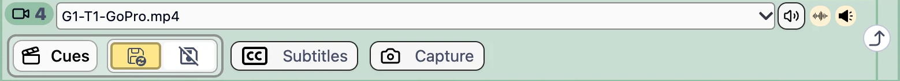
Husk, at et screenshot fra din video stadig er data. Har du brug for at anonymisere personerne, før billedet ender i din rapport, så gør det, før du deler billedet med andre.
Her ser vi en visual repræsentation af lydkilden. Kvaliteten afhænger meget lyden du har optaget (type af mikrofon, fil-format, etc.). Du kan zoome ind og ud på waveformen. Du kan se den nuværende position for video, den samlede længde og hvor lang tid et udvalgt segment er. Du kan bruge du lilla (sync-codes) og grønne (video-cues) trekant til at navigere rundt i din video. Vi ser på hvordan du tilføjer sync-codes og video cues senere i guiden.
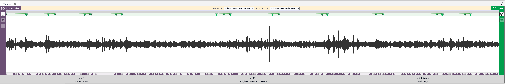
Hvis du ikke vil se sync-codes eller video-cues så kan du bare klikke på knappen ”sync-codes” eller ”cues”.
Så er vi kommet til transskriptionseditoren. Her skriver du din transskription eller redigerer i en transskription andre har lavet (inkl. AI baserede transskriptioner). Det ligner lidt et helt almindelig word-dokument, men lad dig ikke narre. DOTE er bygget til at understøtte transskribering – intet andet. Her under ser du et billede af editoren
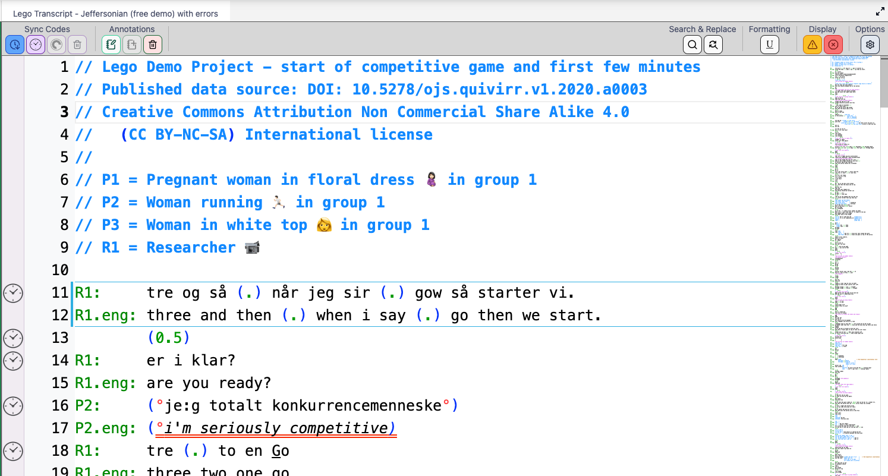
Øverst finder du forskellige grupperinger af funktioner:
For at komme i gang med at nyt projekt, så skal du vælge File → New project. Så åbner et vindue, hvor du skal angive hvor projektet skal gemmes på din computer (vælg et sted, som ikke er koblet med en cloud service (Onedrive, Icloud, dropbox, etc.). Så giver du dit nye projekt et navn og lad os også give transskriptionen et navn. Vi vælger Jefferson som standard.
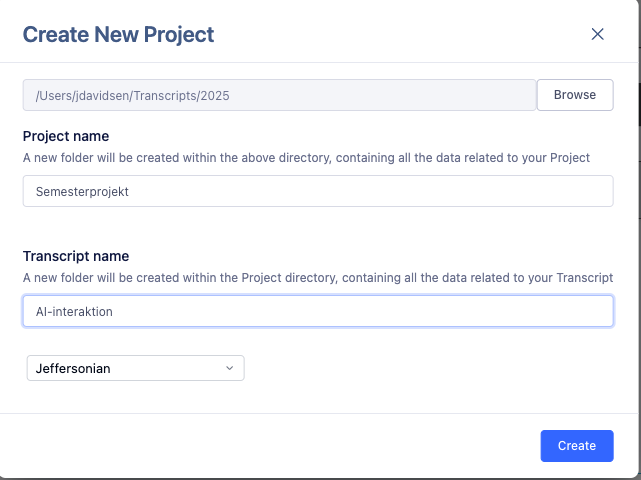
Så har du lavet et projekt med en tilhørende transskription. Nu skal vi have tilknyttet de lyd- eller video-optagelser du skal arbejde med. I toppen af DOTE finder du ”Media Manager” – klik på den. Her kan du importere medie filer ind i dit projekt (obs. DOTE laver en kopi af din mediefil, så vær opmærksom på plads). Du trykker på Import Media Files og lokalisere den eller de filer du vil arbejde med. Afhængig af størrelsen på filen kan det tage lidt tid. Vær opmærksom på om der er flueben ud for den eller de filer du vil arbejde med.
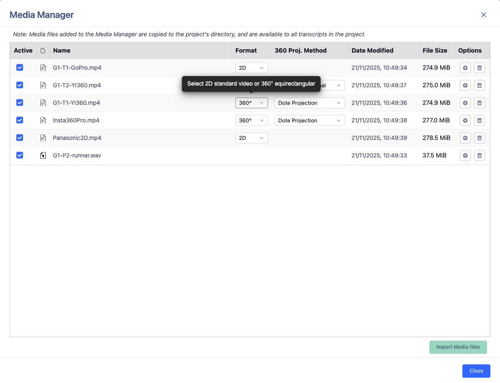
Jefferson, hva for noget! Du kan bruge DOTE uden nogen form for transskriptionskonvention – så skriver du bare løs. Men hvis du vil udnytte DOTEs fulde potentiale, så skal du i gang med Jefferson (eller Mondada). Vi fokuserer udelukkende på Jefferson her, hvis du vil prøve Mondadas konventioner så se vores tuturial om det online.
I toppen af transskriptionen I DOTE er det en god ide med lidt info. I DOTE skriver vi denne type info ved at bruge to // - så bliver teksten blå og DOTE ved at det er metatekst. Det er vigtigt, når vi skal eksportere vores transskription senere. Og det sådan set også fedt nok at vide hvad transskriptionen handler om – også hvis man skal sende ens transskription til andre I ens projektgruppe.
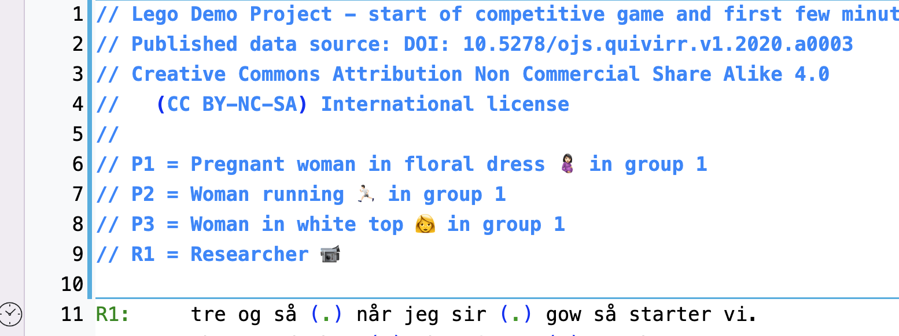
For at DOTE kan hjælpe dig bedst muligt, så skal du simpelten følge denne struktur initialer: Tabs. Det ser sådan ud:
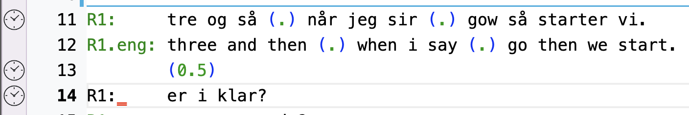
Hvis ikke teksten bliver grøn, så har du lavet en fejl fx brugt space i stedet for tabs. Det går ikke → se linje 14.
Så er det bare med at komme i gang. DOTE tilføjer automatisk linjenumre til hver linje, så det skal du ikke tænke på. Du skal derimod bare skrive det du kan høre (og se) og følge Jeffersons konventioner. Jamen hovsa – DOTE kan hjælpe dig med at følge Jeffersons konventioner. Kan du fx huske genvejstasten til gradetegn? Nej, vel. DOTE kan hjælpe dig – bare skriv s – så kommer DOTE med et forslag.
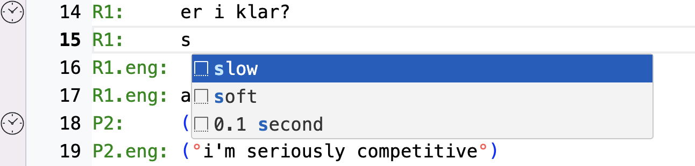
Så har du brugt det rigtige tegn til at vise at ord/sætninger bliver sagt hviskende eller lavt. DOTE hjælper dig med mange andre symboler og tegn, så du kan følge Jefferson.
Du har modtaget en transskription fra en studiekammerat eller en AI. What to do?
Du klikker på ”Import” i top bjælken. Så åbner ”Import into DOTE”, som guider dig igennem importen i tre trin. I første trin vælger du, hvilket format filen har – og så klikker du på ”Continue” ud for det rigtige format. Er du i tvivl, så klik på det lille i’et ud for formatet, så får du flere detaljer.
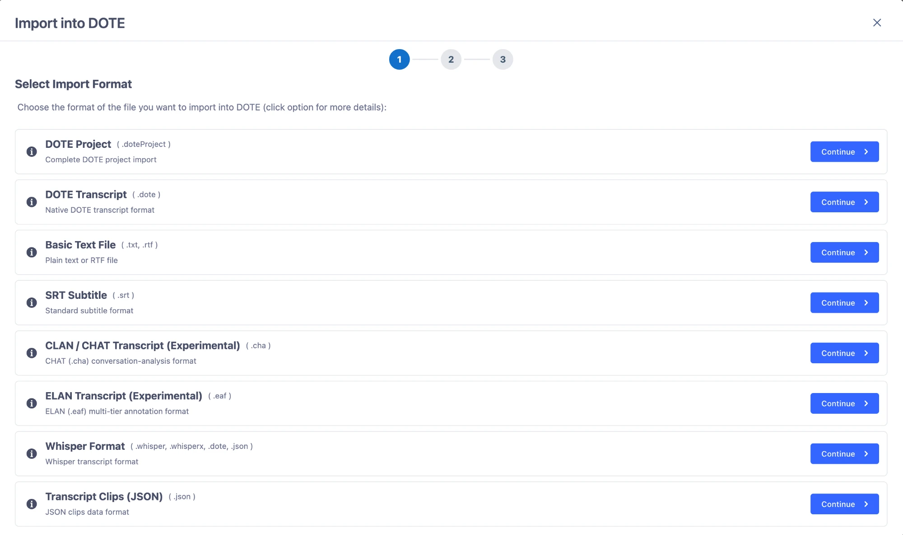
Som studerende er det især de to første formater du får brug for:
DOTE kan også importere en række andre formater:
| Format | Filtype | Hvornår? |
|---|---|---|
| Basic Text File | .txt, .rtf | Almindelig tekst eller en rtf-fil, fx fra Word |
| SRT Subtitle | .srt | Undertekstfiler – fx fra et automatisk transskriptionsværktøj |
| CLAN / CHAT Transcript (Experimental) | .cha | Transskriptioner fra CLAN |
| ELAN Transcript (Experimental) | .eaf | Annotationer fra ELAN |
| Whisper Format | .whisper, .whisperx, .dote, .json | AI-transskriptioner fra Whisper |
| Transcript Clips (JSON) | .json | Transcript-clips (annotationer) |
Formater markeret med Experimental er stadig under udvikling – så tjek din transskription grundigt efter importen.
I DOTE kan du nemt eksportere dit arbejde.
De fleste studerende arbejder med mindre udsnit af deres grov transskriptioner i deres projektrapporter. Derfor kan du med DOTE eksportere din transskription til rtf (en fil der kan læses af Word). Du kan vælge at eksportere hele din transskription eller specifikke dele. Lad os se hvordan.
Transskribering tager tid – og det går hurtigere, når I er flere om det. Med DOTE kan du samarbejde med andre om en transskription: I deler optagelsen op, transskriberer hver jeres del, og bagefter merger I jeres transskriptioner sammen til én samlet transskription. Det kan du gøre i den nyeste version af DOTE.
Inden I går i gang, så aftal hvem der transskriberer hvilken del af optagelsen – fx at du tager de første 15 minutter, og din studiekammerat tager resten. Hver af jer laver jeres egen transskription i DOTE, og I husker at sætte sync-codes i jeres transskription undervejs.
Når I er færdige, så samler du transskriptionerne i samme projekt. ”Merge Transcripts” gemmer sig under ”Project info” i top bjælken (nummer 7). Her ser du alle transskriptioner i projektet og hvilket tidsrum de dækker (fra første til sidste sync-code).
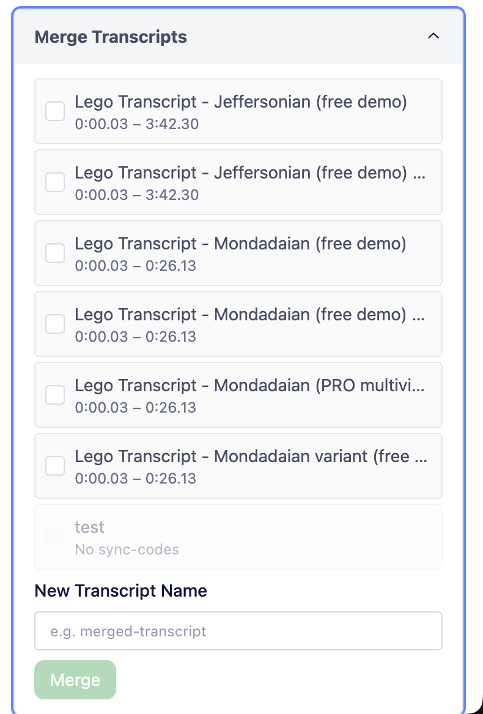
DOTE laver så en ny transskription, hvor jeres dele er sat sammen i rækkefølge efter sync-codes.
Det er sync-codes der styrer, hvordan DOTE sætter transskriptionerne sammen. Derfor er det vigtigt at være opmærksom på to ting:
Her kommer en kort samling med mine bedste tips og tricks. Du kan finde mange flere i vores help-guide.
Kender du det? Du spoler tilbage, lytter, spoler tilbage, lytter – og spoler tilbage igen. Det kan DOTE gøre for dig. Sæt et startpunkt med CTRL+ALT+SPACE [⌘+⌥+N] og et slutpunkt med samme genvej. Så afspiller DOTE det udsnit igen og igen. Du sætter loopet på pause og starter det igen med CTRL+SPACE [⌘+N], og du fjerner det igen med CTRL+ALT+SPACE [⌘+⌥+N] (nogle gange skal du trykke to gange). Husk at sætte sync-codes undervejs. Super fed funktion.
Du behøver ikke kunne alle Jeffersons symboler udenad. Tryk CTRL+ENTER [⌘+ENTER] i transskriptionen – så får du en liste med alle symbolerne. Symboler der hører sammen i par, fx (( )), sætter DOTE selv ind.
At få overlap til at stå lige under hinanden er træls. Klik i den linje hvor overlappet er, så dukker der en lille pære op. Klik på pæren eller tryk CTRL+. [⌘+.] – så retter DOTE overlappet for dig. Det går ikke altid helt rigtigt i meget komplicerede tilfælde, så kig lige efter.
Den gyldne regel: initialer, kolon og så én tab. Det er det eneste sted du må bruge tabs. Inde i selve teksten bruger du mellemrum – også når du skal have overlap til at stå på linje. Bruger du tabs inde i teksten, så kan DOTE ikke hjælpe dig.
DOTE laver ikke automatisk linjeskift. Det er dig der bestemmer hvor en linje slutter. Den lodrette streg i editoren (som standard ved 70 tegn) er kun en hjælpelinje – men det er en god idé at holde sig inden for den, hvis transskriptionen skal med i din rapport.
DOTE gemmer ikke dit arbejde i skyen, men på din computer. Og autobackup er ikke det samme som at gemme – autobackup tager kun en kopi med et vist interval (som standard hvert 5. minut). Så husk at gemme, og lav et checkpoint med en kort besked, når du er færdig for i dag. Tag også jævnligt en backup af dit projekt et andet sted – DOTE kan ikke gendanne et projekt du har slettet.
Når du kopierer tekst i DOTE, så kommer understregninger, sync-codes og video-cues ikke med. De sidder fast i transskriptionen og følger ikke med teksten. Skal du bruge et udsnit med understregninger i din rapport, så eksporter til Word (rtf) i stedet for at kopiere.
Skal du transskribere den samme optagelse på en ny måde – fx med Mondada i stedet for Jefferson – så behøver du ikke sætte alle sync-codes igen. Vælg File → Save As New Transcript, fjern fluebenet ved Copy Transcript text og behold Copy Sync-codes. Smart.
Har du stavet et navn forkert 40 gange? Marker ordet – så kan du se alle de steder det står i transskriptionen. Højreklik og vælg Change All Occurrences, så kan du rette dem alle på én gang.
Hvis DOTE ikke vil importere din video, eller waveformen mangler, så tjek under Settings at FFmpeg er installeret – der er en knap til det. Genstart DOTE og prøv igen. Hjælper det ikke, så kan du konvertere videoen med fx HandBrake. Meget store videoer (over 4K) kan også give problemer.
F10 zoomer ind på hele DOTE og F9 zoomer ud. Vil du kun have større tekst i transskriptionen, så ændrer du skriftstørrelsen under Options i transskriptionen. På nogle bærbare skal du holde FN nede for at bruge F-tasterne.